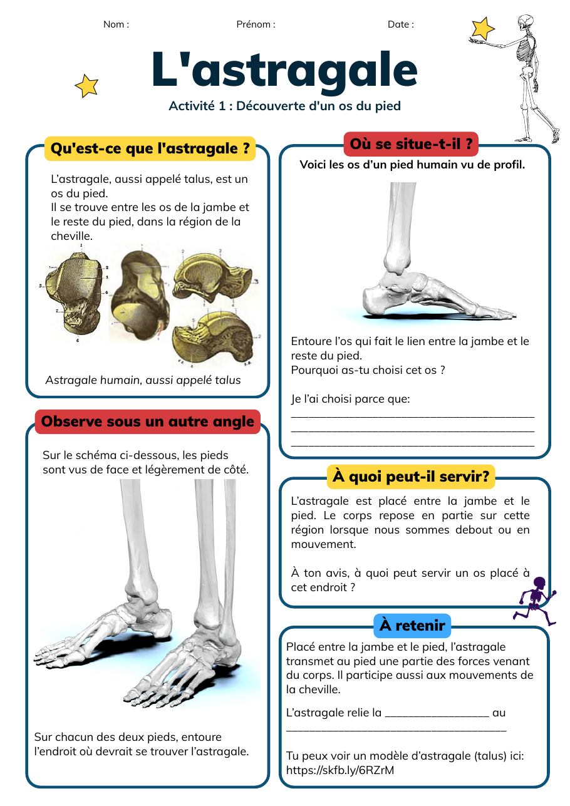

Activité 1
Trouver l'astragale
Les élèves décrivent un os mystère, proposent sa place dans le pied, puis vérifient leur hypothèse avec des repères anatomiques.
- Distinguer observation et hypothèse.
- Localiser le talus/astragale dans le tarse.
- Justifier une proposition avec deux indices.
Documents inclus
Validation anatomique humaine encore requise pour les schémas du guide d'encadrement.